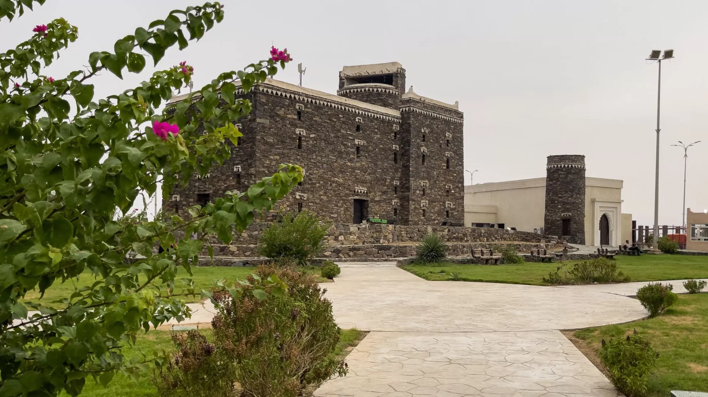

القرية التراثية

أيقونة سياحية تختزل تاريخ المنطقة العريق وتجمع بين عبق الماضي وحيوية الحاضر في موقع استراتيجي على الكورنيش الجنوبي. حيث تتيح لسياح التنقل بين بيئات جازان المختلفة في مكان واحد؛ من "البيت الجبلي" الشامخ بحجارته، إلى "العشة التهامية" بتصميمها الهندسي الفريد، وصولاً إلى طراز "البيت الفرساني" العريق. إن زيارتكم للقرية ليست مجرد نزهة، بل هي رحلة ملهمة عبر الزمن لاستكشاف الحرف اليدوية الأصيلة، وتذوق المأكولات الشعبية التي تشتهر بها المنطقة، والاستمتاع بالفنون الفلكلورية الحية التي تعكس كرم وضيافة أهل جازان. لا تفوتوا فرصة عيش هذه التجربة الثقافية الغنية وقضاء أمتع الأوقات في أجواء شتاء جازان الساحرة، حيث تلتقي الأصالة بالجمال في مشهد لا ينسى .
القلعة الدوسرية

تقع القلعة الدوسرية على قمة جبل يطل على مدينة جازان، وتُعد من أبرز المعالم التاريخية في المنطقة وأكثرها جذبًا للزوار. بُنيت القلعة في أواخر العهد العثماني لتكون موقعًا عسكريًا واستراتيجيًا مهمًا، حيث استُخدمت لمراقبة المدينة وحماية السواحل وتنظيم شؤون الحكم آنذاك. ويمنح موقعها المرتفع إطلالة بانورامية خلابة على جازان والبحر الأحمر، ما يجعلها شاهدة على عبقرية الاختيار المكاني قديمًا، وجاذبة للأنظار في الحاضر.
أما سبب تسميتها بـالقلعة الدوسرية، فيعود – بحسب الروايات التاريخية المتداولة – إلى القائد إبراهيم الدوسري الذي كان مسؤولًا عنها في فترة من الفترات، أو إلى قبيلة الدواسر التي ارتبط اسمها بإدارة القلعة وحمايتها. ومع مرور الزمن، أصبحت القلعة رمزًا من رموز جازان التاريخية، تحمل بين جدرانها قصصًا عن القوة والصمود، وتختزل مرحلة مهمة من تاريخ المنطقة، مما يمنح الزائر شعورًا بالرهبة والحنين عند الوقوف أمامها والتأمل في تفاصيلها العريقة
السوق الشعبي

السوق الشعبي الداخلي في جازان، والمعروف محلياً بـ "سوق جازان التاريخي"، تجربة استثنائية تأخذك إلى قلب الهوية الحقيقية للمنطقة بعيداً عن صخب المجمعات الحديثة. يتميز هذا السوق بكونه مركزاً حيوياً يجمع بين عبق الماضي واحتياجات الحاضر، حيث يمكنك العثور على أشهر منتجات جازان من النباتات العطرية كالفل والكادي والبعيثران، إلى جانب المصنوعات اليدوية مثل "الموافي" الفخارية والمجامر المزخرفة. كل زائر وسائح ألا يغادر جازان دون المرور بهذا المعلم النابض، حيث تتاح لك الفرصة لتذوق السمن والعسل الأصيل، واقتناء الأقمشة التراثية الملونة، والتعامل المباشر مع الباعة المحليين الذين يجسدون كرم أهل الجنوب وبساطتهم. إنها دعوة لاستكشاف "روح جازان" في أزقة تفوح منها رائحة التراث والجمال، وضمان الحصول على تذكارات أصلية تحكي قصة حضارة عريقة.
المكتبة العامة

يقدّم بيت الثقافة في جازان تجربة ثقافية متكاملة تُثري المجتمع بالمعرفة، وتنمّي المهارات، وتحتفي بالهوية الوطنية. ويُعد البيت أحد مبادرات هيئة المكتبات الرامية إلى تحويل المكتبات العامة إلى منصّات ثقافية وحاضنات للإبداع، تفتح أبوابها لجميع الفئات العمرية عبر برامج معرفية، وأنشطة تعليمية، وفعاليات اجتماعية، ومساحات تفاعلية حديثة.
كما يمثل البيت وجهة حضارية تجمع بين التعلم، والمتعة، في بيئة تفاعلية محفّزة على الاكتشاف
عالم المغامرات

مركز عالم المغامرات في جازان هو وجهة ترفيهية عائلية متكاملة يقع داخل كادي مول. يتميز المركز بتوفير مجموعة متنوعة من الألعاب والأنشطة التي تناسب الأطفال والعائلات لخلق تجربة مليئة بالمرح والإثارة. تشمل المرافق ألعاب الفيديو والألعاب التفاعلية، بالإضافة إلى ألعاب المهارة التي تتيح للزوار فرصة الفوز بجوائز، وسيارات التصادم التي تحظى بشعبية كبيرة. كما يقدم المركز أحياناً عروضاً خاصة مثل "العب حتى تتعب" في أيام معينة، مما يجعله خياراً اقتصادياً وممتعاً لقضاء وقت الفراغ.
مطاعم شعبية منصف

يُعتبر مطعم "مُصنّف" (Masnaf) أيقونةً عصرية للمطبخ الجيزاني الأصيل، حيث يمزج بين عبق التراث وروح الحداثة ليقدم تجربة طعام فريدة تعكس هوية منطقة جازان. ويتميز بتصميمه المستوحى من العمارة الجيزانية التقليدية التي تنقل الزوار إلى أجواء البيت التهامي العتيق.ان زيارة مطعم "مصنف" ليست مجرد تناول لوجبة لذيذة، بل هي رحلة استكشافية لتاريخ المنطقة من خلال نكهاتها الغنية؛ لذا ندعوكم لزيارته والاستمتاع بجودة الخدمة والأجواء التي تجمع بين الرقيّ وأصالة الماضي.
متحف للآثار والتراث
"مركز زوار التراث الثقافي بمنطقة جازان هو مركز تابع لهيئة التراث في السعودية، ويهدف إلى تسليط الضوء على التراث الغني والتاريخي لمنطقة جازان, وعرض التراث الثقافي لمنطقة جازان عبر التاريخ، من خلال مكونات مثل المواقع الأثرية والفنون الصخرية والموجودات الأثرية.وهو كمعلم رائد يضم بين جنباته قطعاً أثرية نادرة تعود لعصور ما قبل التاريخ والعصور الإسلامية، إلى جانب استعراضه للموروث الشعبي والحرف اليدوية التي تعكس هوية الإنسان الجازاني. إن زيارة هذا الصرح ليست مجرد جولة سياحية، بل هي رحلة ملهمة عبر الزمن تستحق الاهتمام؛ لذا ندعو الجميع لاستكشاف هذا الإرث الوطني العظيم، والاستمتاع بالمعروضات والبرامج التفاعلية التي تعزز الوعي بتاريخنا المجيد، وتدعم جهود الحفاظ على هويتنا الثقافية للأجيال القادمة.